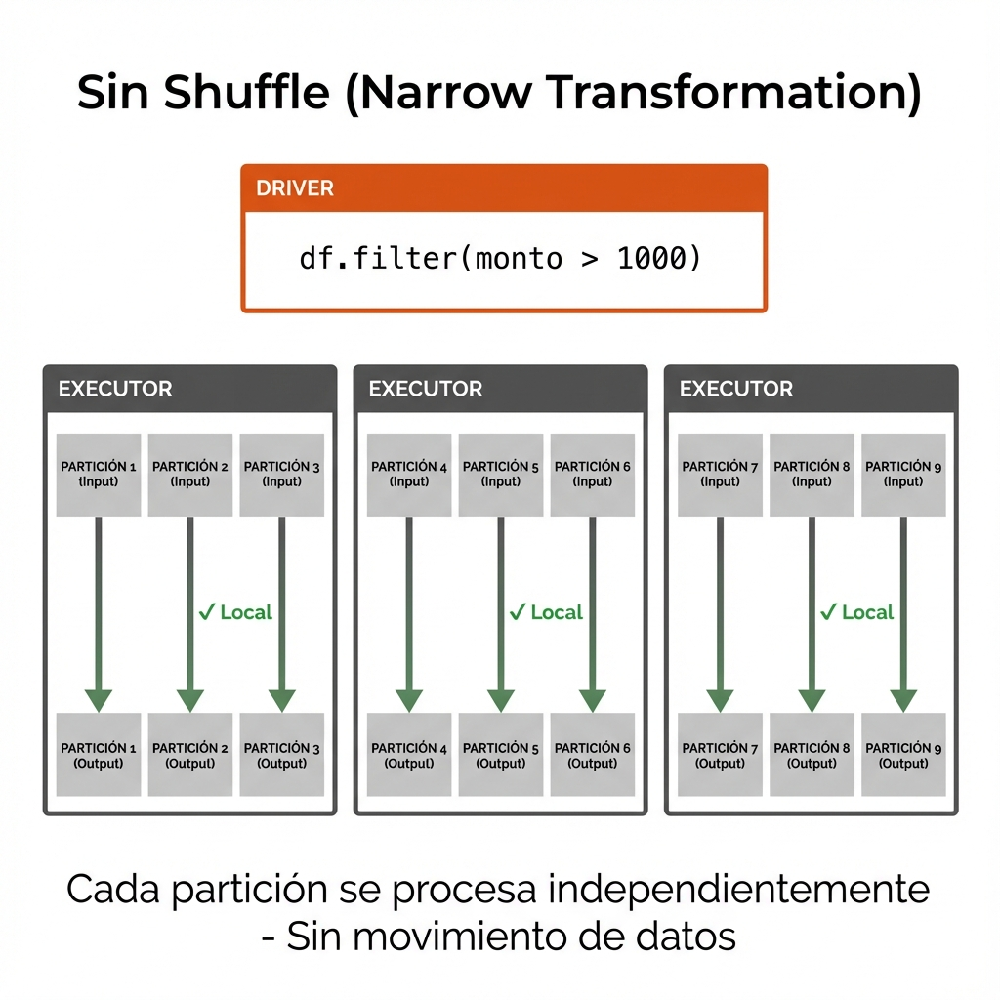
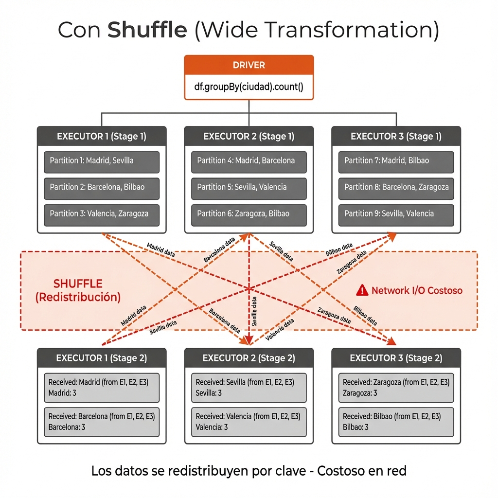

MASTERCLASS TÉCNICA
Apache Spark:
Arquitectura y Optimización
Del paradigma single-node al pensamiento distribuido
El Cuello de Botella de la IA
del tiempo se pierde en Data Prep
"Viernes: Script corriendo... 🤞
Lunes: Out Of Memory Error 💥"
El Sistema Operativo del Big Data
La diferencia entre procesar lo que cabe en tu RAM
y procesar lo que cabe en el Mundo.
(El motor que te permite dormir los fines de semana 😴)
El Cambio Mental: Single Node → Distributed
Pandas (Single Node)
CPU + RAM
Todo en una máquina
- Iteración explícita (.apply, .iterrows)
- Límite: RAM disponible
- Ejecución inmediata
Spark (Distributed)
Driver + Workers (Executors)
- Transformaciones declarativas
- Límite: Cluster (escalable)
- Lazy evaluation (plan + acción)
Anatomía de un Cluster: Driver → Executors → Tasks
Particiones
DataFrame (10 GB)
Dividido en Particiones (~128 MB c/u)
Flujo de Ejecución
.filter(col("monto") > 10000)
.show() ← ACCIÓN
Driver
Datos divididos en Particiones
Workers (Executors)
Driver
El Vocabulario de Spark: Transformaciones vs. Acciones
Transformaciones
Instrucciones (Lazy)
Son promesas de cálculo. Crean un nuevo DataFrame a partir del anterior.
.select().filter().groupBy().withColumn()
Acciones
Ejecución (Eager)
Disparan el trabajo real. Devuelven un resultado al driver o escriben a disco.
.count().show().write().collect()
Insight: Spark no mueve un dedo hasta que ve una Acción.
Tipos de Transformaciones: Narrow vs Wide
Narrow Transformations
1:1 Dependency
Definición:
Cada partición de entrada genera exactamente una partición de salida. Los datos permanecen en el mismo nodo.
# Ejemplos de Narrow Transformations
df.filter(col("edad") > 18)
df.select("nombre", "ciudad")
df.withColumn("nuevo", col("viejo") * 2)
df.map(lambda x: x.upper())Wide Transformations
N:N Dependency
Definición:
Cada partición de salida puede depender de múltiples particiones de entrada. Requiere reorganizar datos entre nodos.
# Ejemplos de Wide Transformations
df.groupBy("categoria").count()
df.orderBy("fecha")
df1.join(df2, "id")
df.distinct()El Secreto del Rendimiento: Shuffle vs No Shuffle
Sin Shuffle
Narrow Transformation

# Cada partición se procesa LOCALMENTE
df_filtered = df.filter(col("monto") > 1000)
# También: .select(), .withColumn(), .map()⚡ Rápido: Los datos NO se mueven entre nodos
Con Shuffle
Wide Transformation

# Datos se REDISTRIBUYEN por clave
df_grouped = df.groupBy("ciudad").count()
# También: .join(), .repartition(), .distinct()🐢 Costoso: Transferencia masiva por red entre nodos
Lazy Evaluation
# 1. Leer datos
df = spark.table("ventas")
# 2. Filtrar
df_filtrado = df.filter(col("monto") > 1000)
# 3. Agrupar
df_agrupado = df_filtrado.groupBy("ciudad").sum("monto")
# 4. Mostrar resultado
df_agrupado.show() ← AQUÍ EJECUTA TODO.filter()
.groupBy()
.count()
.write()
⚠️ CHALLENGE #1: Will it CRASH?
Tu compañero acaba de escribir este código para analizar los 10 millones de registros:
# Leer los 10M de registros
df = spark.table("ventas_10M")
# Filtrar transacciones grandes
df_filtered = df.filter(col("monto") > 1000)
# Convertir a Pandas para análisis
pandas_df = df_filtered.toPandas()
# Análisis con matplotlib
pandas_df.plot(kind='scatter', x='fecha', y='monto')¿Qué pasará? 🤔
Regla de oro: Nunca traigas millones de filas al driver. Agrega primero, muestra después.
⚠️ CHALLENGE #2: Will it CRASH?
Este código tiene un bug matemático obvio. ¿Explotará al ejecutarse?
# Leer datos
df = spark.table("ventas_10M")
# Crear una métrica (¡con un error!)
df_metricas = df.select(
col("producto"),
col("ventas"),
(col("ganancia") / col("ventas_totales")).alias("margen"),
(col("precio") / 0).alias("precio_normalizado") # ← 🚨 División por cero
)
# Aplicar filtro
df_filtered = df_metricas.filter(col("margen") > 0.2)
print("Pipeline construido exitosamente ✓")¿Qué pasará? 🤔
Pro tip: Usa df.explain()
para ver el plan sin ejecutarlo
⚠️ CHALLENGE #3: Will it be SLOW?
Tu compañero de Pandas escribió esto para procesar los 10M de registros:
# Leer datos
df = spark.table("ventas_10M")
# Crear una lista para resultados
resultados = []
# Procesar cada fila (estilo Pandas)
for row in df.collect():
if row['monto'] > 1000:
margen = (row['ganancia'] / row['monto']) * 100
resultados.append({
'producto': row['producto'],
'margen': margen
})
# Convertir a DataFrame de Spark
df_resultado = spark.createDataFrame(resultados)¿Funcionará? ¿Será rápido? 🐌
Regla de oro: Nunca uses bucles Python para iterar DataFrames. Piensa declarativo, no imperativo.
El Arte del Paralelismo
La clave no es tener muchas cajas, sino distribuir bien a los clientes entre ellas
Particiones: La Clave para 10M de Registros
❌ El Error Común: Over-Partitioning
Problema: Cada Task tiene overhead (scheduling, serialización). Si una partición tiene solo 5,000 filas, el overhead de gestión es mayor que el procesamiento real.
✓ La Regla de Oro para 10M Registros
Si tienes 32 cores → 64 a 128 particiones
df = spark.table("data")
.repartition(128) # Explicit
# O configura globalmente:
spark.conf.set(
"spark.sql.shuffle.partitions",
128
)
Almacenamiento: Row-Oriented vs Columnar
Insight: Con 20 columnas, Parquet puede ser 20x más rápido que CSV para queries analíticas.
Spark en la Era de la IA
💡 No uses Spark solo para SQL. Úsalo para escalar tu código de Python complejo (Embeddings, Tokenización, Inferencia)
Checklist: Spark Eficiente para 10M Registros
Preguntas → Discusión → Implementación en sus pipelines